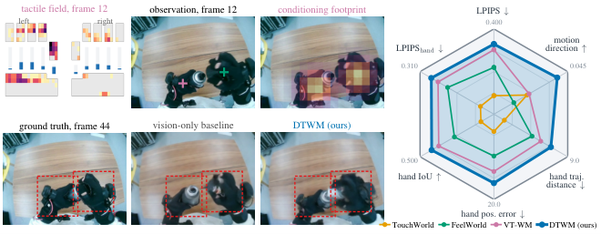

摘要
操作世界模型通常用视频训练。但建立和解除接触等事件决定操作如何继续，往往很难在画面中看清，用触觉反而更容易感知。我们提出灵巧操作触觉世界模型（DTWM），根据已观测视频和双手手套分别记录的触觉，预测第一人称操作视频的未来帧。在视频 tokens 中与每只手对应的位置，用从零初始化的残差分支将该手的触觉输入预训练视频扩散 Transformer。因果掩码阻止模型在预测时访问未来信息。 对照模型只用视觉，与 DTWM 的架构、参数和训练设置一致。每种模型分别训练三次。加入触觉后，对手部运动的低估从 23% 降到 9% ，手部区域的感知误差降低 7.4% 。预测越往后，提升越明显，后续预测块的改善幅度约为首个预测块的 4.1 倍。在同一设置下，DTWM 也优于其他视触觉世界模型。即使推理时没有触觉输入，训练时加入触觉仍能改善未来帧预测。消融表明力的大小与作用位置都有用。无论按整只手还是逐个位置把力改为二值接触，预测误差都会增大。观测到的力随时间如何变化，能帮助判断当前交互会持续还是会改变。
World models for manipulation are typically trained from video, yet the events that determine how manipulation unfolds, such as making and releasing contact, are difficult to observe visually and are often easier to sense through touch. We present the Dexterous Tactile World Model (DTWM), a video world model for future-frame prediction of egocentric manipulation from both observed video and tactile signals from a glove worn on each hand. We condition a pretrained video diffusion transformer on each hand’s tactile signal through a zero-initialized residual at the corresponding hand location in the video tokens, while a causal mask prevents predicted frames from accessing future information. Compared with a vision-only model matched in architecture, parameters, and training, DTWM reduces the underestimation of hand motion from 23% to 9%, while reducing the perceptual error in the hand region by 7.4% across three training runs per model. The benefit also increases over the prediction horizon, with the improvement in the later predicted chunks being about 4.1x larger than in the first. DTWM also outperforms other visual-tactile world models under the same setting, and training with touch improves future-frame prediction even when no touch is available at inference. Ablations show that the model benefits from both the magnitude and spatial location of force: replacing the tactile signal with binary contact states, either per hand or per location, increases prediction error. The observed course of the force indicates whether the interaction will persist or change.
1 引言

图 1：DTWM 在全手触觉感知技术下，对人类操作行为的未来帧预测能力更强。左图：双手持持的喷雾罐开瓶场景；虚线框代表真实手区域。右图：与现有视觉-触觉世界模型相比，我们的模型在整帧图像及手部区域的视觉质量上更优，且手部位置与运动预测也更为准确。
世界模型根据过去的观察结果及其他条件，预测物理世界未来的发展态势，通常以未来场景的形式呈现。这类模型在物理人工智能方面具有三大作用：它们能够合成数据——单个记录即可生成多种可能的未来状态，因为真实世界的操作数据难以大规模获取 (Yang et al., 2024b; Jang et al., 2025; NVIDIA et al., 2025; Liu et al., 2026)；它们可作为初始化手段——能够隐含地预测未来的模型能够反映物体之间的相互作用方式，因此成为策略及其他物理交互模型的良好初始化方法 (Wu et al., 2024; Hu et al., 2025)；它们还可以作为环境——机器人策略 (Kim et al., 2025; Black et al., 2025; Sun et al., 2026a; Sun et al., 2026b) 可以在世界模型中进行训练或评估，而非在真实世界中 (Ha & Schmidhuber, 2018; Hafner et al., 2020; Bruce et al., 2024; Quevedo et al., 2026)。
A world model predicts how the physical world will evolve from past observations and other conditions, typically as future frames. Such models are useful
for physical AI in three ways. They can synthesize data : one recording can yield many possible futures, since real-world manipulation data is costly to scale ( Yang et al., 2024b ; Jang et al., 2025 ; NVIDIA et al., 2025 ; Liu et al., 2026 ) . They can serve as initialization : a model that predicts the future well implicitly models how objects
interact, which makes it a strong initialization for policies and other models
of physical interaction ( Wu et al., 2024 ; Hu et al., 2025 ) . They can also serve as an environment : a robot
policy ( Kim et al., 2025 ; Black et al., 2025 ; Sun et al., 2026a ; Sun et al., 2026b ) can be trained or evaluated in the world model instead of the real world ( Ha & Schmidhuber, 2018 ; Hafner et al., 2020 ; Bruce et al., 2024 ; Quevedo et al., 2026 ) .
这三种应用都需要准确的预测，才能确定接触时的具体结果。在操控过程中，无论是抓取动作、物体滑落，还是手指触碰表面，都决定了后续会发生什么。然而，世界模型主要基于视频数据进行训练，而接触状态却难以直接观察。手通常会遮挡接触区域，而触碰物体与用力按压物体在视觉上几乎无法区分。因此，模型必须从模糊的视觉证据中推断接触情况，其不确定性会传递至预测结果中。这种失败会在生成的视频中显现出来：预测的手可能失去手指，与所抓取的物体融合，或者移动幅度小于预期（Figures 1和3）。
All three uses require accurate predictions where the outcome is decided: at contact. In manipulation, whether a grasp holds, an object slips, or a finger reaches a surface determines what happens next. Yet world models are trained mainly from video, where contact is hard to observe. The hand often occludes the contact region, and touching an object can look nearly identical to pressing firmly against it. The model must therefore infer contact from ambiguous visual evidence, and its uncertainty propagates to the predictions. The failure is visible in the generated video: predicted hands may lose their fingers, merge with the objects they hold, or move less than they should ( Figures 1 and 3 ).
触摸提供了这些事件的直接信号。压力感应手套能够记录每只手接触的位置及力度，甚至包括那些被摄像头无法捕捉到的接触情况。近期的一些数据集将日常操作中的自我视角视频与双手的触觉数据相结合，即 (Zhou et al., 2026a)。因此，我们基于灵巧触摸来构建世界模型：根据观察到的视频帧以及双手的触觉信号，模型能够预测下一步操作将如何进行。
Touch provides a direct signal of these events. A pressure-sensing glove records where and how firmly each hand makes contact, including contacts that are hidden from the camera. Recent datasets pair egocentric videos of everyday manipulation with such tactile measurements from both hands ( Zhou et al., 2026a ) . We therefore condition a world model on dexterous touch: given the observed video frames and the tactile signals from both hands, it predicts how the manipulation unfolds next.
一些最新的世界模型将触觉因素纳入视频预测策略中 (Higuera et al., 2026; Ma et al., 2026; Huang et al., 2026; Zhou et al., 2026b)，但在数据、环境及模型设计方面与我们的研究有所不同。其中三个模型基于指尖或夹持器传感器所采集的机器人轨迹进行训练 (Higuera et al., 2026; Ma et al., 2026; Huang et al., 2026)，而 TouchWorld (Zhou et al., 2026b) 则在适配双手机器人之前使用与我们的研究相同的人类数据。这四个模型均在机器人环境中评估触觉现象，其中世界模型基于机器人的动作或特定子任务来服务于规划或策略制定。而我们则仅通过历史观测数据来预测以自我为中心的人类操作行为，因此模型还必须推断出手本身的运动方式。此外，这些模型将触觉表现为全局触觉特征、额外的 tokens 信息或独立的触觉图像，但这些特征均不与接触发生的图像区域相对齐。 我们将这种缺失的对齐现象称为索引不匹配：手套识别是通过皮肤区域来索引的，视频变换器则通过图像中的特定位置来索引，而被触碰的皮肤则可以在画面中的任何位置。
Several recent world models incorporate touch into video prediction ( Higuera et al., 2026 ; Ma et al., 2026 ; Huang et al., 2026 ; Zhou et al., 2026b ) , but differ from ours
in data, setting, and model design. Three are trained on robot trajectories from
fingertip or gripper-mounted sensors ( Higuera et al., 2026 ; Ma et al., 2026 ; Huang et al., 2026 ) ,
whereas TouchWorld ( Zhou et al., 2026b ) uses the same human corpus as ours before adapting to a pair of
robot hands. All four evaluate touch in robot settings, where the world model is conditioned on the robot’s
actions or on a subtask and serves planning or a policy. We instead predict egocentric human manipulation
from past observations alone, so the model must also infer how the hands themselves will move. Finally,
they represent touch as global tactile features, additional tokens or a separate tactile image, none
aligned with the image region where contact occurs. We call this missing alignment the indexing mismatch : a glove reading is indexed by patches of skin, a video transformer by places in
the image, and the touched skin can be anywhere in the frame.
DTWM 通过将观测到的触觉读数映射到由渲染的手骨骼计算得出的手位，从而解决了不匹配问题。 Figure 2 ). 我们将每只手的识别结果嵌入到视频中，并将其分布在视频中。 tokens 以高斯分布轮廓围绕该位置，并将其作为残差输入到预训练的视频扩散变换器中。该残差通过零初始化投影计算得到，因此预训练模型在初始化时保持不变，路径学习过程而非强制设定。读取信息仅针对观测到的帧提供，而因果掩码则防止每个预测帧与后续帧进行交互。因此，模型仅基于过去的观测数据进行预测，无需考虑未来的手部姿态、动作或读取信息，这与实际部署情况不同。主干网络、自编码器及文本编码器保持冻结状态，触觉路径仅包含少量线性映射。
DTWM resolves the mismatch by placing the observed tactile readings at the observed hand location, calculated using rendered hand skeleton ( Figure 2 ). We embed each hand’s reading, spread it over the video tokens
around that location with a Gaussian footprint, and add it as a residual inside a pretrained video
diffusion transformer. The residual is computed by a zero-initialized projection, so the pretrained model
is unchanged at initialization and the pathway is learned rather than imposed. The reading is supplied
only for the observed frames, and a causal mask keeps every predicted frame from attending to later ones.
The model therefore predicts from past observations alone, with no future hand pose, action or reading, as
it would at deployment. The backbone, the autoencoder and the text encoder stay frozen, and the tactile
pathway adds only a few linear maps.
我们通过观察十三帧图像，并一次性预测接下来的三十六帧，对 DTWM 进行了评估。仅基于视觉的基线模型在架构、参数及训练方式上均与之相同，其触觉输入被忽略，因此两种模型的区别仅在于是否存在传感器信号传递的路径。仅基于视觉的模型低估了手部运动的幅度，为 23%，而 DTWM 则低估了约 9%。每种模型在三次训练过程中，手部区域的感知误差均减少 7.4%，而整个帧的感知误差则减少 5.1%。改进效果在预测过程中也持续增加，后期部分的改进幅度约为前段的 4.1 倍。在相同条件下，该模型还优于三种现有的视觉-触觉世界模型，其感知误差降低了约 1.8% 至 14.7%。
We evaluate DTWM by observing thirteen frames and predicting the next
thirty-six in one pass. The vision-only baseline is matched
in architecture, parameters and training, with its tactile input zeroed, so the two models differ only in whether the pathway carries the sensor’s signal. The vision-only model underestimates how
much the hands move by 23%, and DTWM by
9%. The perceptual error in the hand region falls by
7.4% across three training runs per model, against 5.1% over the
whole frame. The improvement also grows along the prediction and is about 4.1x larger in the
later chunks than in the first. We also outperform three existing visual-tactile world models under the same setting, with a perceptual error lower by 1.8% to
14.7%.
对触觉输入的消融实验表明，用二进制接触状态来替代完整的信号，无论是在每个位置还是针对每只手，都会增加预测误差；触觉信息的减少程度越大，误差也就越大。因此，该模型不仅考虑手是否处于接触状态，还考虑其接触位置以及力度大小。我们认为这是基于预测机制：所观察到的触觉历史能够反映力随时间的变化情况，而不仅仅是在观察窗口结束时的数值。在语料库中，力值保持稳定的手往往能保持抓握状态，而力值下降或上升的手在接下来半秒内释放的可能性则是 1.8 到 2.5 倍（Figure 6），这一趋势预示着释放的概率会超过当前力水平所能达到的程度。我们的贡献如下：
Ablations of the tactile input show that replacing the full signal with binary contact states, either at each location or for each hand, increases prediction error, with larger reductions in tactile information leading to larger errors. The model therefore uses not only whether a hand is in contact, but also where it is pressed and how firmly. We attribute this to the predictive setting: the observed tactile history captures how force evolves over time, rather than only its value at the end of the observation window. In the corpus, a hand whose force holds steady tends to keep its grasp, whereas a hand whose force decays or rises is 1.8 to 2.5 times as likely to release it within the next half second ( Figure 6 ), and this trend predicts a release beyond what the current force level does. Our contributions are the following:
- •
灵巧触觉世界模型。我们提出了 DTWM 模型，这是一种用于未来视角人类操作预测的世界模型。我们在基于自我中心视角的视频与双手触觉信号上对预训练的视频扩散变换器进行微调，并通过高斯足迹机制，将每只手的触觉信号添加到对应手位处的视频 tokens 中。
Dexterous tactile world model. We propose DTWM, a world model for future-frame prediction of egocentric human manipulation. We fine-tune a pretrained video diffusion transformer on egocentric video and tactile signals from both hands, adding each hand’s tactile signal to the video tokens at that hand’s location through a Gaussian footprint.
- •
提升操作行为的未来框架预测能力。与仅基于视觉的匹配模型相比，该方法将手部运动的低估程度从 23% 降低至 9%，手部区域感知误差也从 7.4% 降低。此外，在相同情境下，其性能也优于现有的视觉-触觉世界模型。
Improving future-frame prediction of manipulation. Against a matched vision-only model, it
reduces the underestimation of hand motion from 23% to
9% and the hand-region perceptual error by
7.4%. It also outperforms existing visual-tactile world models in the same setting.
- •
灵巧的触觉机制。基于触觉信号的位置与强度进行训练，比基于二元接触状态更能提升预测效果。在训练数据中，观察过程中力的变化情况能够指示交互是否持续或改变。即使在推理阶段没有触觉刺激，通过触觉训练也能提升预测能力。
Dexterous tactile matters. Conditioning on the location and magnitude of the tactile signal improves
prediction more than a binary contact state does. In the training data, how the force changes during the observation indicates whether the interaction will persist or change. Training with touch also improves prediction even when no touch is available at inference.